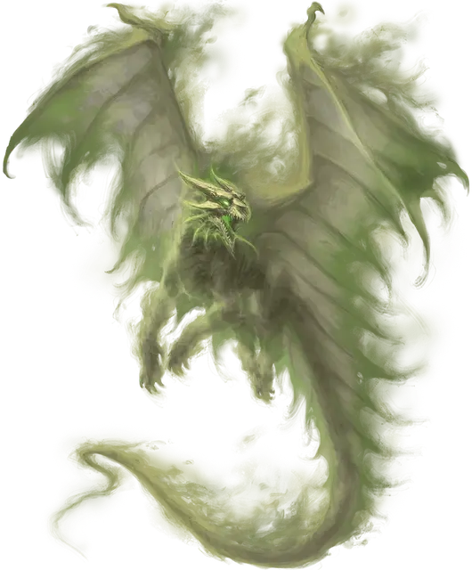

Призрачный дракон
Ghost Dragon
Огромная Нежить, любое мировоззрение

Класс Доспеха 10
Хиты 324 (24к12 + 168)
Скорость 40 футов, летая 80 футов (парит)
| мод | спас | ||
|---|---|---|---|
| СИЛ | 20 | +5 | +5 |
| ЛОВ | 10 | +0 | +0 |
| ТЕЛ | 25 | +7 | +13 |
| мод | спас | ||
|---|---|---|---|
| ИНТ | 16 | +3 | +3 |
| МДР | 15 | +2 | +8 |
| ХАР | 19 | +4 | +10 |
Навыки Восприятие +14, Скрытность +12
Сопротивление урону дробящий, колющий, рубящий
Иммунитет к урону кислота, некротическая энергия, холод, яд
Иммунитет к состояниям захват, испуг, истощение, окаменение, опутанность, отравление, очарование, паралич, сбивание с ног
Чувства слепое зрение 60 футов, тёмное зрение 120 футов, пассивное Восприятие 24
Языки Общий, Драконий, Телепатия 120 фт.
Опасность 17 (18000 опыта)
Бонус мастерства +6
Особенности
Легендарное сопротивление (3/день). Если призрачный дракон провалит спасбросок, он может вместо этого сделать спасбросок успешным.
Бестелесное перемещение. Призрачный дракон может перемещаться сквозь других существ и предметы, как если бы они были труднопроходимой местностью. Он получает урон силовым полем 5 (1к10), если оканчивает ход внутри предмета.
Необычная природа. Призрачному дракону не требуются пища, вода и сон.
Действия
Мультиатака. Призрачный дракон совершает одну атаку Укусом и две атаки Когтем.
Укус. . Рукопашная атака оружием: +11 к попаданию, досягаемость 10 фт., одна цель. Попадание: 32 (6к8+5) холодом и скорость цели уменьшается вдвое до начала следующего хода дракона.
Коготь. . Рукопашная атака оружием: +11 к попаданию, досягаемость 5 фт., одна цель. Попадание: 14 (2к8+5) урона некротической энергией.
Ужасающее дыхание (перезарядка 6). Призрачный дракон выдыхает призрачный туман в 90-футовом конусе. Все существа в этой области должны совершить спасбросок Телосложения Сл 21. При провале существо получает 40 (9к8) урона холодом и становится испуганным призрачным драконом на 1 минуту. При успехе существо получает половину этого урона и не пугается.
Пока существо испугано призрачным драконом оно парализовано. Испуганное существо может повторять спасбросок в конце каждого своего хода, оканчивая на себе эффект в случае успеха.
Если спасбросок существа успешен или эффект для него заканчивается, существо становится невосприимчивым к Ужасающему дыханию этого призрачного дракона в течение следующих 24 часов.
Описание
Привязанность дракона к сокровищу может быть достаточно сильной, чтобы привязать дух дракона к существованию после смерти. Такой призрачный дракон преследует клад, часто образуя привязанность к одному бесценному предмету, который становится центром существования призрачного дракона.
Призрачный дракон - это полупрозрачная бестелесная версия оригинального дракона. Хотя его оружие дыхания напоминает призрачное пламя, электричество или кислоту, оно несет в себе потустороннее проклятие. Дыхание призрачным туманом может вызывать кошмары наяву.